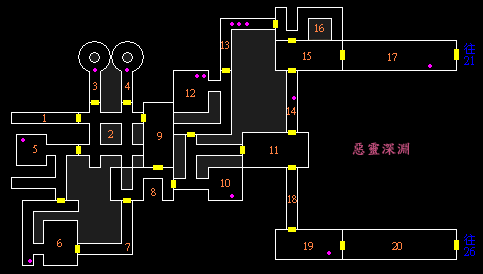
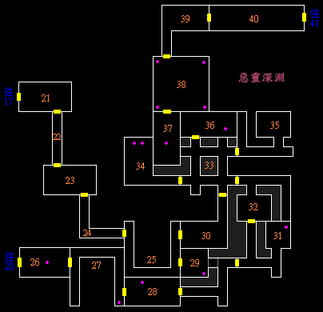
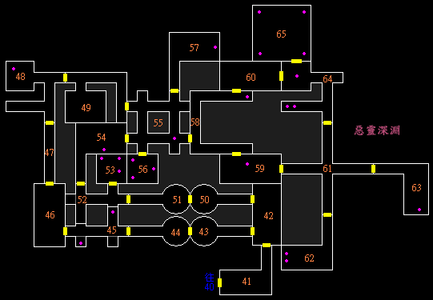

|
惡靈古堡～生存者２-----地圖攻略～Inferno地獄
|
| 地圖解說 地圖上所標示的部分道具會隨著Mission關卡的不同而有些許改變
 ３麥林手槍 / 榴彈槍。小心柱子後面有獵人埋伏 ４手槍 ５急救箱 ６來福槍 / 機關槍 １０手槍 １１這裡有兩條分歧的路線，兩條都可以到達目的地，但是困難度有差別，往上是比較嚴苛的路線 １２散彈槍、寶石 １３手槍、來福槍 / 機關槍、急救箱 １４手槍 １７急救箱 １９麥林手槍 / 榴彈槍
 ２４剛進入這個走道時會先看到兩個木箱，趕快往旁邊移動，因為待會會有雷射光束從箱子後面射出 ２６散彈槍 ２７手槍 ２８腰包（可增加地底所有任務中的武器攜帶數） ２９急救箱。從２８進來時靠近鐵捲門就會打開，並跑出一隻獵人，如果從２５進來，鐵捲門不會打開 ３０這裡的木箱裡面暗藏三隻Bander ３１手槍 ３４散彈槍、來福槍 / 機關槍 ３６寶石 ３７手槍 ３８急救箱 x 2、火藥十字弓、來福槍 / 機關槍。除了四個角有道具的箱子，其他箱子有些有獵人
 ４２有兩條路可以選擇，往５０的路比較近，往４３的路上則有寶石可以拿 ４５麥林手槍 / 榴彈槍、寶石。小心鐵捲門後面的獵人 ４６全是毒氣僵屍，一隻一隻解決，避免被毒氣噴到 ４８散彈槍 ５３藥草 x 2、Pz穿甲硫彈EX ５４除了中間的箱子有麥林手槍 / 榴彈槍，其他都是獵人 ５５Pz穿甲硫彈EX ５６散彈槍、手槍、急救箱 ５７寶石 ５８手槍 ５９手槍 ６０有一隻獵人改 ６２散彈槍、來福槍 / 機關槍 ６３寶石 ６４藥草、來福槍 / 機關槍、急救箱 ６５急救箱 x 3、麥林手槍 / 榴彈槍。頭目戰開始時會先看到左右兩隻移動非常慢的Tyrant，可以使用火藥 十字弓從容把他們解決，Tyrant停下腳步搖搖晃晃時即是已被擊倒的跡象，此時要趕快切換麥林手槍 ，真正的頭目會由中央的實驗艙裡出現 任務解說 Mission１：消滅潛伏在區域 深處的Boss 過關條件：打倒位於６５的Boss Tyrant x 3 倒數計時：50分鐘 過關獎勵：Beretta M93R x 200發（Claire） / Gold Lugar x 300發（Steve） 重點指導：重要的腰包要趕快拿到手後，一開始不熟悉敵人分配的話，最好挑比較簡單的分歧路線來走 Mission２：收回時鐘塔內的所有寶石 過關條件：取得四顆寶石後，打倒６５的Tyrant x 3 倒數計時：50分鐘 過關獎勵：AK47 Assault Rifle x 200%（Claire） / Ingram M-10 x 250%（Steve） Mission３：消滅所有怪物 過關條件：消滅202隻怪物後，打倒６５的Tyrant x 3 倒數計時：60分鐘 過關獎勵：Sbass 12 .S.S散彈槍 x 50發 重點指導：時間其實相當的充裕，但是不要漏掉躲在箱子裡的敵人 Mission４：達成Combo x 80次 過關條件：Combo計量表達到80 HIT後，打倒６５的Tyrant x 3 倒數計時：40分鐘 過關獎勵：Magnum x 20發（Claire） / M79 Grenade Launcher x 30發（Steve） 重點指導：此任務不在於打的敵人多寡，而是在於累積HIT計量表，進行遊戲時除了能快速累積計量表的 金幣、銀幣外，隨處可見的燈要好好利用，對沒有必要而且難賺計量表的房間儘量不要進去。 Mission５：10分鐘內逃離 過關條件：於10分鐘內抵達６５，並打倒Tyrant x 3 倒數計時：10分鐘 過關獎勵：Pz對甲硫彈EX x 5發 Mission６： 獲得9000萬分 過關條件：獲取9000萬Point之後打倒６５的Tyrant x 3 倒數計時：40分鐘 過關獎勵：Rocket Launcher x 10發 重點指導：要在40分鐘以內獲得9000萬分，考驗玩家的技術和對這個關卡地圖的熟悉度，關鍵點就在 Combo、Critical，累積計量表來得到更高的分數，以Critical一擊必殺快速解決敵人。 Mission７： 擊倒300隻以上敵人 過關條件：擊倒300隻敵人後，打倒６５的Tyrant x 3 倒數計時：99分鐘 過關獎勵：新增隱藏角色Rodrigo 重點指導：關卡中安排的敵人數量明顯比較多，但是仍然不足300的要求，因此某些房間「再生」的敵人 就是關鍵所在，時間非常的多，每個地方都跑一遍吧。
將時鐘塔的六個任務完成之後，可以欣賞一段遊戲中四個人物戰鬥的模樣，除了Claire和Steve之外，當然還 有兩個隱藏人物。 |
惡靈深淵Biohazard Abyss http://98.to/coolbio